Description
This is a MATLAB script that appears to be part of a larger workflow for processing and analyzing data from a scanner. Here's a high-level overview of the script:
1. The script takes in several input parameters, including: * `scan`: a matrix representing the scanned data * `show`: a logical flag indicating whether to display a visual representation of the scan * `filename` and `extention`: strings specifying the output file name and extension * `delimiter` (optional): a character string specifying the delimiter used in the output file 2. The script performs several operations on the input data: * It applies a coordinate transformation to transform the scanned data into a more suitable format for further analysis. * If `show` is `true`, it displays a 3D scatter plot of the original scan, with optional offset and base markers added. * It writes the transformed data to an output file (if specified) in a matrix format. 3. The script also exports the following outputs: * `scan`: the original scanned data * `scanoffset`: the transformed coordinates of the scanned data 4. If the output file name includes an extension, it saves the `fitobj` structure to a separate file.
Some notable aspects of the script:
- It uses the `tiledlayout` function to create a 3D scatter plot with multiple axes.
- It applies a coordinate transformation using functions like `prepareSurfaceData`, which is not shown in this snippet.
- It uses MATLAB's built-in functions for plotting, such as `scatter3` and `xlabel`.
- The script uses optional parameters and default values, making it more flexible and user-friendly.
To write a similar script from scratch, you would need to:
1. Define the input parameters and their expected data types. 2. Perform the necessary coordinate transformation using your own functions or MATLAB's built-in functions. 3. Create a 3D scatter plot with multiple axes using `tiledlayout` and other plotting functions. 4. Write the transformed data to an output file in a matrix format. 5. Export the outputs, including any additional structures or values.
Keep in mind that this script is likely part of a larger workflow, so you may need to consult other scripts and documentation for more information on the specific requirements and assumptions made here.
Contents
- Examples
- Create a 1D scan grid at 3-axis measurement and save into scan_ax1fix_ax2fix_ax3var.txt
- Create a 2D scan grid at 3-axis measurement.
- Create a 3D scan grid at 3-axis measurement.
- Create a 1D scan grid with optional axis at 3-axis measurement.
- Create a 2D scan grid at 3-axis measurement with offsetted axis-3 by `poly02` law.
- Create a 2D scan grid at 3-axis measurement with offsetted axis-3 by `poly22` law.
- Create a 2D scan grid at 3-axis measurement with changing axis scan order.
- Create a 2D scan grid at 3-axis measurement with offsetted axis-2 by `poly1` and axis-3 by `poly22` laws correspondingly.
- Create a 2D scan grid at 3-axis measurement with offsetted axis-1 by `linearinterp` law.
- Create a 2D scan grid at 3-axis measurement with offsetted axis-3 by `poly1` law.
- Create a 2D scan grid at 3-axis measurement with offsetted axis-3 by `poly1` law.
- Create a 2D scan grid at 3-axis measurement with offsetted axis-3 by `poly1` law and transform unit to mm.
- Create a 2D scan grid at 3-axis measurement with offsetted axis-3 by `poly1` law and transform unit to mm with specified basis.
Examples
This section presents several examples of the usage of grid generation for multi-axis traverse actuator.
Create a 1D scan grid at 3-axis measurement and save into scan_ax1fix_ax2fix_ax3var.txt
scan = gridcta(0, 0, 0:50:1000, filename = 'docs\src\gridcta\scan_ax1fix_ax2fix_ax3var')
scan =
0 0 0
0 0 50
0 0 100
0 0 150
0 0 200
0 0 250
0 0 300
...
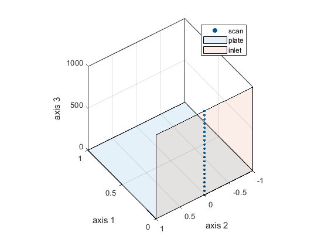 Create a 2D scan grid at 3-axis measurement.
scan = gridcta(0, -3000:500:3000, 0:50:1000)
scan =
0 -3000 0
0 -3000 50
0 -3000 100
0 -3000 150
0 -3000 200
0 -3000 250
0 -3000 300
...
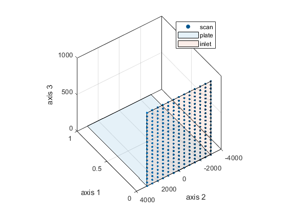 Create a 3D scan grid at 3-axis measurement.
scan = gridcta(0:200:1000, -3000:500:3000, 0:50:1000)
scan =
0 -3000 0
0 -3000 50
0 -3000 100
0 -3000 150
0 -3000 200
0 -3000 250
0 -3000 300
...
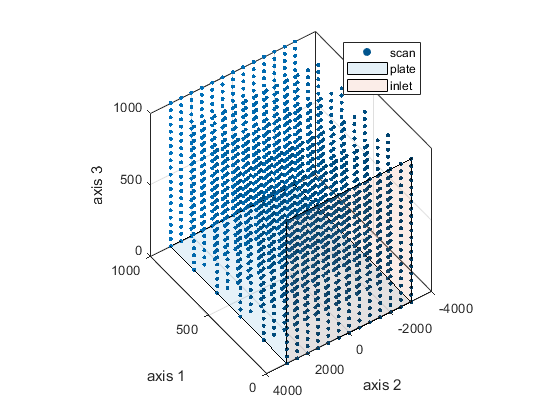 Create a 1D scan grid with optional axis at 3-axis measurement.
scan = gridcta(0, 0, 200:100:1000, 0:1)
scan =
0 0 200 0
0 0 200 1
0 0 300 0
0 0 300 1
0 0 400 0
0 0 400 1
0 0 500 0
...
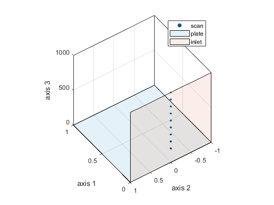 Create a 2D scan grid at 3-axis measurement with offsetted axis-3 by `poly02` law.
[scan, scanoffset, fitobj] = gridcta(0, -1000:500:1000, 200:100:1000, ... offset = {0, [-1000, -800, -400, 0, 400, 800, 1000], [-425, -356, -314, -300, -314, -356, -425]}, ... fit = 'poly02')
scan =
0 -1000 200
0 -1000 300
0 -1000 400
0 -1000 500
0 -1000 600
0 -1000 700
0 -1000 800
...
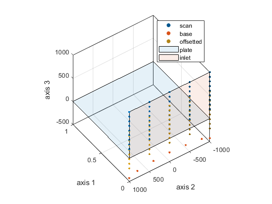 Create a 2D scan grid at 3-axis measurement with offsetted axis-3 by `poly22` law.
[scan, scanoffset, fitobj] = gridcta(0:50:500, -1000:500:1000, 500, ... offset = {[0, 250, 500], [-1200, -400, 400, 1200], ... [-425, -314, -314, -425, -325, -303, -303, -325, 275, 297, 297, 275]}, ... fit = 'poly22')
scan =
0 -1000 500
0 -500 500
0 0 500
0 500 500
0 1000 500
50 -1000 500
50 -500 500
...
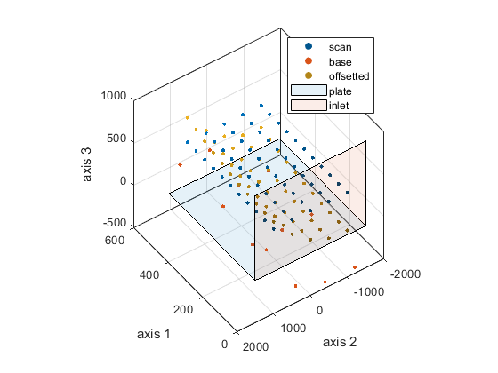 Create a 2D scan grid at 3-axis measurement with changing axis scan order.
scan = gridcta(0:200:1000, -3000:500:3000, 500, order = [1, 2, 3])
scan =
0 -3000 500
200 -3000 500
400 -3000 500
600 -3000 500
800 -3000 500
1000 -3000 500
0 -2500 500
...
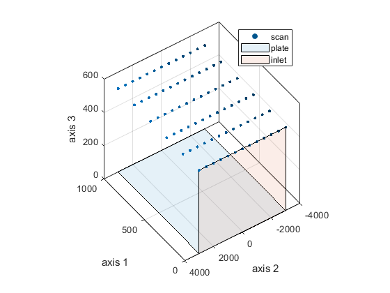 Create a 2D scan grid at 3-axis measurement with offsetted axis-2 by `poly1` and axis-3 by `poly22` laws correspondingly.
offset = {{[0, 1000], [0, 5000], []}; ...
{[0, 250, 500], [-1200, -400, 400, 1200], [-425, -314, -314, -425, -325, -303, -303, -325, 275, 297, 297, 275]}};
[scan, scanoffset, fitobj] = gridcta(0:50:500, -1000:500:1000, 500, ...
offset = offset, offsetdim = [2, 3], ...
fit = {'poly1', 'poly22'})
scan =
0 -1000 500
0 -500 500
0 0 500
0 500 500
0 1000 500
50 -1000 500
50 -500 500
...
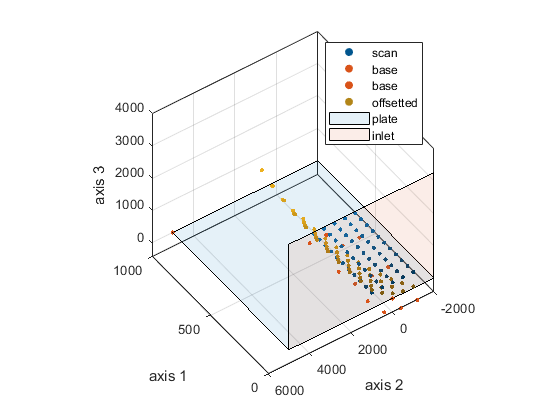 Create a 2D scan grid at 3-axis measurement with offsetted axis-1 by `linearinterp` law.
[scan, scanoffset, fitobj] = gridcta(0:50:500, -1000:500:1000, 500, ... offset = {[0, 100, 200], [0, 200, 600], []}, offsetdim = 1, ... fit = 'linearinterp')
scan =
0 -1000 500
0 -500 500
0 0 500
0 500 500
0 1000 500
50 -1000 500
50 -500 500
...
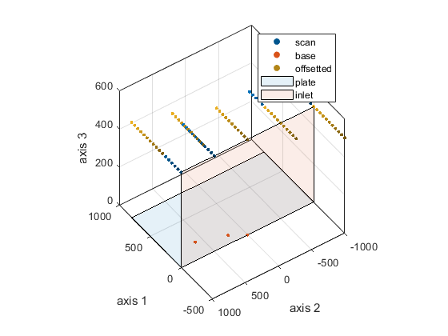 Create a 2D scan grid at 3-axis measurement with offsetted axis-3 by `poly1` law.
[scan, scanoffset, fitobj] = gridcta(0:50:500, -1000:500:1000, 500, ... offset = {[], [0, 100], [0, 500]}, offsetdim = 3, ... fit = 'poly1')
scan =
0 -1000 500
0 -500 500
0 0 500
0 500 500
0 1000 500
50 -1000 500
50 -500 500
...
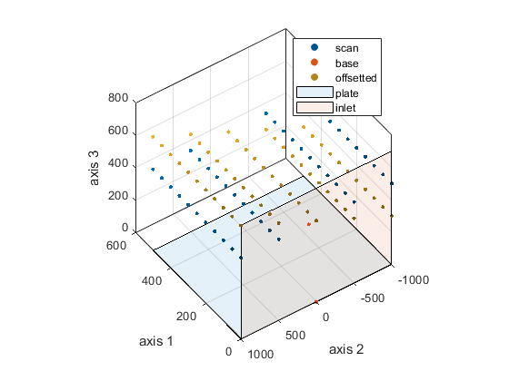 Create a 2D scan grid at 3-axis measurement with offsetted axis-3 by `poly1` law.
[scan, scanoffset, fitobj] = gridcta(0:50:500, -1000:500:1000, 500, ... offset = {[0, 100], [], [0, 500]}, offsetdim = 3, ... fit = 'poly1')
scan =
0 -1000 500
0 -500 500
0 0 500
0 500 500
0 1000 500
50 -1000 500
50 -500 500
...
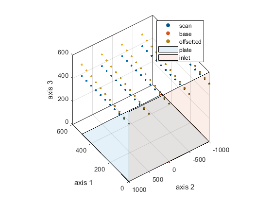 Create a 2D scan grid at 3-axis measurement with offsetted axis-3 by `poly1` law and transform unit to mm.
[scan, scanoffset, fitobj] = gridcta(0:50:500, -1000:500:1000, 500, ... offset = {[0, 100], [], [0, 500]}, offsetdim = 3, ... fit = 'poly1', unit = 'mm')
scan =
0 -2.5000 0.6250
0 -1.2500 0.6250
0 0 0.6250
0 1.2500 0.6250
0 2.5000 0.6250
1.0000 -2.5000 0.6250
1.0000 -1.2500 0.6250
...
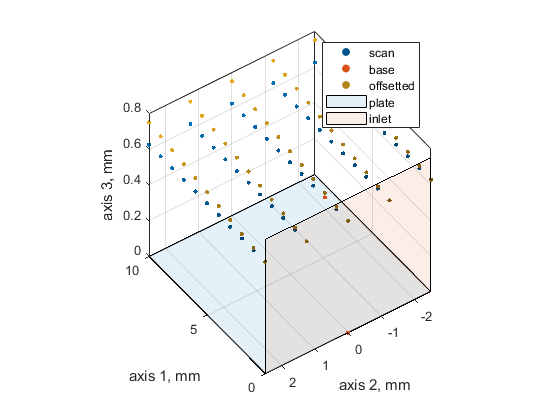 Create a 2D scan grid at 3-axis measurement with offsetted axis-3 by `poly1` law and transform unit to mm with specified basis.
[scan, scanoffset, fitobj] = gridcta(0:50:500, -1000:500:1000, 500, ... offset = {[0, 100], [], [0, 500]}, offsetdim = 3, ... fit = 'poly1', unit = 'mm', refmarker = 'n9')
scan = 429.6857 207.6645 0.6250 429.6816 208.9172 0.6250 429.6775 210.1700 0.6250 429.6734 211.4227 0.6250 429.6692 212.6755 0.6250 431.9060 208.8130 0.6250 431.9019 210.0657 0.6250 ...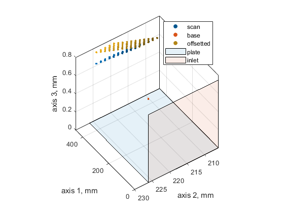